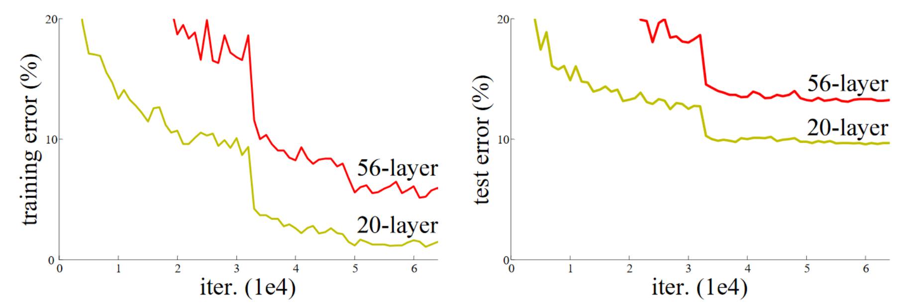

ResNets (Residual Networks) - Explained¶
What This Notebook Covers¶
This notebook introduces ResNets (Residual Networks), one of the most important architectural innovations in deep learning. ResNets enabled training of much deeper networks than previously possible.
The Deep Network Problem¶
Before ResNets, there was a puzzling problem:
| Network Depth | Expected Result | Actual Result |
|---|---|---|
| 20 layers | Good accuracy | Good accuracy |
| 56 layers | Better accuracy | Worse accuracy! |
Adding more layers should give at least the same accuracy (the extra layers could just learn identity mappings). But in practice, deeper networks performed worse.
The Solution: Skip Connections¶
ResNets solve this by adding skip connections (also called shortcut connections or residual connections):
Traditional: ResNet:
x ─→ [Conv] ─→ y x ─→ [Conv] ─→ (+) ─→ y
│ ↑
└──────────┘
(skip connection)
Key Concepts We'll Learn¶
- Why deeper isn't always better - The degradation problem
- Skip connections - The key innovation
- ResBlock - Building block of ResNets
- Identity mapping vs projection - Handling dimension changes
- Using timm - Pre-built ResNet architectures
Let's dive in!
Part 1: Setup and Imports¶
#|default_exp resnet
# This cell marks that code with #|export will be exported to miniai/resnet.py
#|export
# Standard library imports
import pickle, gzip, math, os, time, shutil
import matplotlib as mpl
import numpy as np
import matplotlib.pyplot as plt
# Fastcore utilities
import fastcore.all as fc
from collections.abc import Mapping
from pathlib import Path
from operator import attrgetter, itemgetter
from functools import partial
from copy import copy
from contextlib import contextmanager
# PyTorch imports
import torch
import torchvision.transforms.functional as TF
import torch.nn.functional as F
from torch import tensor, nn, optim
from torch.utils.data import DataLoader, default_collate
from torch.nn import init
from torch.optim import lr_scheduler
from torcheval.metrics import MulticlassAccuracy
from datasets import load_dataset, load_dataset_builder
# Our custom modules from previous notebooks
from miniai.datasets import *
from miniai.conv import *
from miniai.learner import *
from miniai.activations import *
from miniai.init import *
from miniai.sgd import *
from fastcore.test import test_close
# Configure display
torch.set_printoptions(precision=2, linewidth=140, sci_mode=False)
torch.manual_seed(1)
mpl.rcParams['image.cmap'] = 'gray' # Default colormap for images
# Disable logging warnings
import logging
logging.disable(logging.WARNING)
# Set seed for reproducibility
set_seed(42)
🛠️ Interactive visualizations — one-time setup¶
The cells marked 🎮 Interactive below embed standalone HTML/JS visualizations
(stored in the interactive_viz/ folder next to this notebook) at full width and
~full viewport height. Run the next cell once, then run any 🎮 cell.
# ============================================================================
# INTERACTIVE VISUALIZATIONS -- setup (run this cell ONCE).
# Each "🎮 Interactive" cell below loads a standalone HTML file from the
# published copy on GitHub Pages, in an isolated <iframe> (its CSS/JS can't leak
# into the notebook). It is shown FULL WIDTH and auto-fits its content height.
# No local files needed -- the visualizations are read from GitHub.
# ============================================================================
from IPython.display import HTML
def show_viz(path, height="600px"):
"""Embed an interactive visualization full width; it auto-fits its height.
`path` may be a bare 'interactive_viz/<file>.html' (resolved to the GitHub
Pages copy) or a full https URL."""
base = "https://shammun.github.io/shammunul-fastai-notes/notebooks/"
if not path.startswith("http"):
path = base + path
return HTML(
f'<iframe src="{path}" loading="lazy" allowfullscreen '
f'style="width:100%;height:{height};border:1px solid #dde5f2;border-radius:12px;'
f'box-shadow:0 8px 24px rgba(123,92,214,.12);background:#fff;"></iframe>'
'<script>addEventListener("message",function(e){'
'if(e.data&&e.data.type==="ce-frame-height"&&e.data.height>50){'
'var fs=document.querySelectorAll("iframe");for(var i=0;i<fs.length;i++){'
'if(fs[i].contentWindow===e.source){fs[i].style.height=e.data.height+"px";break;}}}});</script>'
)
# Dataset configuration
xl, yl = 'image', 'label' # Column names
name = "zalando-datasets/fashion_mnist" # Dataset name
bs = 1024 # Batch size
xmean, xstd = 0.28, 0.35 # Normalization constants
# Transform: convert to tensor and normalize
@inplace
def transformi(b):
b[xl] = [(TF.to_tensor(o) - xmean) / xstd for o in b[xl]]
# Load dataset and create dataloaders
dsd = load_dataset(name)
tds = dsd.with_transform(transformi)
dls = DataLoaders.from_dd(tds, bs, num_workers=4)
Understanding DataLoaders.from_dd() in miniai¶
Origin¶
from_dd is not a PyTorch function. It is a custom @classmethod defined on the DataLoaders class inside the miniai library — the mini deep learning framework that Jeremy Howard builds incrementally throughout the fast.ai Part 2 course. It was defined in one of the earlier notebooks (around notebook 05–09) and exported to miniai.datasets via nbdev.
What Does "dd" Stand For?¶
The "dd" in from_dd stands for DatasetDict — specifically a Hugging Face datasets.DatasetDict, which is exactly what load_dataset() returns.
Usage Context¶
dsd = load_dataset("fashion_mnist") # returns a DatasetDict with 'train' and 'test' splits
tds = dsd.with_transform(transformi) # still a DatasetDict, but with lazy transforms
dls = DataLoaders.from_dd(tds, bs, num_workers=4)
What It Does Under the Hood¶
Here is a reconstructed version of the implementation based on the course pattern:
class DataLoaders:
def __init__(self, train, valid):
self.train = train
self.valid = valid
@classmethod
def from_dd(cls, dd, batch_size, **kwargs):
return cls(
DataLoader(dd['train'], batch_size=batch_size, shuffle=True,
collate_fn=collate_dict(dd['train']), **kwargs),
DataLoader(dd['test'], batch_size=batch_size, shuffle=False,
collate_fn=collate_dict(dd['test']), **kwargs)
)
Step-by-Step Breakdown¶
Extracts the
'train'and'test'splits from the Hugging FaceDatasetDict.Wraps each in a standard PyTorch
DataLoader(fromtorch.utils.data), withshuffle=Truefor training andshuffle=Falsefor validation.Uses a custom
collate_fn(likelycollate_dictor similar, also defined in miniai) because HF datasets return dictionaries (like{'image': ..., 'label': ...}) rather than tuples, and PyTorch'sdefault_collateneeds help to handle that dict format properly.Bundles both DataLoaders into a single
DataLoaderscontainer with.trainand.validattributes for convenient access in the training loop.
Why It Exists¶
It is essentially a convenience factory method that bridges the gap between the Hugging Face datasets ecosystem (which uses DatasetDict with named splits) and PyTorch's DataLoader, saving you from writing the boilerplate of creating two separate DataLoaders every time.
The fastai v2 library has a similar concept (DataLoaders.from_dsets), but the miniai version is a much simpler, stripped-down implementation built specifically for HF datasets.
Key Distinction from PyTorch and fastai¶
| Aspect | PyTorch | fastai v2 | miniai |
|---|---|---|---|
| Class | torch.utils.data.DataLoader |
fastai.data.core.DataLoaders |
miniai.datasets.DataLoaders |
| Factory method | None (manual setup) | from_dsets, from_dblock |
from_dd |
| Input format | Any Dataset |
fastai Datasets / DataBlock |
HF DatasetDict |
| Collation | default_collate |
fa_collate |
Custom collate_dict |
| Complexity | Low-level | Full-featured | Minimal / educational |
#|export
# GeneralRelu activation (from previous notebooks)
# leak=0.1: Leaky ReLU with 0.1 slope for negatives
# sub=0.4: Subtract 0.4 to center outputs around 0
act_gr = partial(GeneralRelu, leak=0.1, sub=0.4)
# Setup callbacks
metrics = MetricsCB(accuracy=MulticlassAccuracy()) # Track accuracy
astats = ActivationStats(fc.risinstance(GeneralRelu)) # Monitor activations
# Standard callbacks
cbs = [DeviceCB(), metrics, ProgressCB(plot=True), astats]
# Kaiming initialization for leaky ReLU
iw = partial(init_weights, leaky=0.1)
def conv(ni, nf, ks=3, stride=2, act=nn.ReLU, norm=None, bias=None):
if bias is None: bias = not isinstance(norm, (nn.BatchNorm1d,nn.BatchNorm2d,nn.BatchNorm3d))
layers = [nn.Conv2d(ni, nf, stride=stride, kernel_size=ks, padding=ks//2, bias=bias)]
if norm: layers.append(norm(nf))
if act: layers.append(act())
return nn.Sequential(*layers)
# %% ../nbs/11_initializing.ipynb 115
def get_model(act=nn.ReLU, nfs=None, norm=None):
if nfs is None: nfs = [1,8,16,32,64]
layers = [conv(nfs[i], nfs[i+1], act=act, norm=norm) for i in range(len(nfs)-1)]
return nn.Sequential(*layers, conv(nfs[-1],10, act=None, norm=False, bias=True),
nn.Flatten()).to(def_device)
How Does Appending Activation and Normalization Layers Work in PyTorch's nn.Sequential?¶
The Confusion¶
In the conv() helper function from miniai, we see lines like:
if norm: layers.append(norm(nf))
if act: layers.append(act())
This raises two questions:
- How are
normandactbeing "called" like functions when they are passed in as arguments? - How does appending activation to the end of a list actually apply it to the convolution output?
The Core Insight: Classes as Arguments¶
The key thing to understand is that in Python, classes are first-class objects. When you write act=nn.ReLU, you are not creating a ReLU — you are passing the class itself as an argument. The parentheses () come later to instantiate it.
So there are two distinct moments:
nn.ReLU # This is the class (a blueprint) — no parentheses
nn.ReLU() # This is an instance (an actual object) — with parentheses
The conv() Function¶
def conv(ni, nf, ks=3, stride=2, act=nn.ReLU, norm=None, bias=None):
if bias is None: bias = not isinstance(norm, (nn.BatchNorm1d,nn.BatchNorm2d,nn.BatchNorm3d))
layers = [nn.Conv2d(ni, nf, stride=stride, kernel_size=ks, padding=ks//2, bias=bias)]
if norm: layers.append(norm(nf))
if act: layers.append(act())
return nn.Sequential(*layers)
How if act: layers.append(act()) Works¶
Inside conv(), the parameter act holds a reference to a class (like nn.ReLU). When you write act(), you are calling that class's constructor — equivalent to writing nn.ReLU(). So:
act = nn.ReLU # act now points to the ReLU class
act() # same as nn.ReLU() — creates a ReLU instance
The if act: guard handles the case where act=None is passed (meaning "no activation wanted"). Since None is falsy and class references are truthy, this elegantly skips the activation when not needed.
The layers list after this might look like:
layers = [
nn.Conv2d(1, 8, kernel_size=3, stride=2, padding=1), # the convolution
nn.ReLU() # the activation
]
How if norm: layers.append(norm(nf)) Works¶
Same pattern, but norm is a normalization class like nn.BatchNorm2d, and it needs an argument — the number of features:
norm = nn.BatchNorm2d # the class itself
norm(nf) # same as nn.BatchNorm2d(nf) — e.g., nn.BatchNorm2d(8)
So layers becomes:
layers = [
nn.Conv2d(1, 8, kernel_size=3, stride=2, padding=1), # convolution
nn.BatchNorm2d(8), # normalization
nn.ReLU() # activation
]
Why Appending to the End of the List Works¶
This is where nn.Sequential does its magic. When you write:
return nn.Sequential(*layers)
PyTorch chains these layers so that the output of each layer becomes the input to the next, in order. So during a forward pass:
Input tensor x
→ passes through nn.Conv2d(1, 8, ...) → produces feature maps
→ passes through nn.BatchNorm2d(8) → normalizes those feature maps
→ passes through nn.ReLU() → applies activation element-wise
→ output tensor
The activation is not being applied "on" the Conv2d layer in some internal way — it is a separate layer that processes the output of the previous layer. This is functionally identical to writing:
x = conv(x)
x = batchnorm(x)
x = relu(x)
Tracing Through get_model()¶
def get_model(act=nn.ReLU, nfs=None, norm=None):
if nfs is None: nfs = [1,8,16,32,64]
layers = [conv(nfs[i], nfs[i+1], act=act, norm=norm) for i in range(len(nfs)-1)]
return nn.Sequential(*layers, conv(nfs[-1],10, act=None, norm=False, bias=True),
nn.Flatten()).to(def_device)
With default arguments (act=nn.ReLU, norm=None), the list comprehension produces 4 blocks:
i |
conv(ni, nf) |
What Gets Built (norm=None, so no BatchNorm) |
|---|---|---|
| 0 | conv(1, 8) |
Sequential(Conv2d(1→8), ReLU()) |
| 1 | conv(8, 16) |
Sequential(Conv2d(8→16), ReLU()) |
| 2 | conv(16, 32) |
Sequential(Conv2d(16→32), ReLU()) |
| 3 | conv(32, 64) |
Sequential(Conv2d(32→64), ReLU()) |
Then the final conv(64, 10, act=None, norm=False, bias=True) produces just a bare Conv2d(64→10) with no activation and no normalization — because this is the output layer that produces raw logits.
Full Model Architecture (default arguments)¶
Sequential(
Sequential(Conv2d(1→8), ReLU()),
Sequential(Conv2d(8→16), ReLU()),
Sequential(Conv2d(16→32), ReLU()),
Sequential(Conv2d(32→64), ReLU()),
Sequential(Conv2d(64→10)), # no activation — raw logits
Flatten() # flatten for cross-entropy loss
)
Full Model Architecture (with norm=nn.BatchNorm2d)¶
If you call get_model(act=nn.ReLU, norm=nn.BatchNorm2d), each inner block becomes Sequential(Conv2d, BatchNorm2d, ReLU) instead — and the bias in Conv2d automatically turns off because of the if bias is None logic (since BatchNorm has its own learnable bias, a separate conv bias would be redundant).
Sequential(
Sequential(Conv2d(1→8, bias=False), BatchNorm2d(8), ReLU()),
Sequential(Conv2d(8→16, bias=False), BatchNorm2d(16), ReLU()),
Sequential(Conv2d(16→32, bias=False), BatchNorm2d(32), ReLU()),
Sequential(Conv2d(32→64, bias=False), BatchNorm2d(64), ReLU()),
Sequential(Conv2d(64→10, bias=True)), # no activation — raw logits
Flatten() # flatten for cross-entropy loss
)
Summary¶
This is a clean design pattern — passing classes as arguments lets you swap architectures (different activations, different normalizations) without rewriting the model builder. The nn.Sequential container takes care of chaining the layers so that data flows through them in order, making "appending to the end of a list" equivalent to "apply this operation next in the forward pass."
def get_model(act=nn.ReLU, nfs=(8, 16, 32, 64, 128), norm=nn.BatchNorm2d):
"""
Create a deep CNN without skip connections.
This is a straightforward stack of convolutional layers.
Args:
act: Activation function class (default: nn.ReLU)
nfs: Tuple of filter counts for each layer (default: (8,16,32,64,128))
norm: Normalization layer class (default: nn.BatchNorm2d)
Returns:
nn.Sequential model
Architecture:
Input: 1x28x28 (grayscale Fashion MNIST)
conv(1→8, stride=1) # 28x28 → 28x28 (no downsampling)
conv(8→16, stride=2) # 28x28 → 14x14
conv(16→32, stride=2) # 14x14 → 7x7
conv(32→64, stride=2) # 7x7 → 4x4
conv(64→128, stride=2)# 4x4 → 2x2
conv(128→10) # 2x2 → 1x1 (10 classes)
Flatten() # Output: 10
"""
# First layer: keep spatial dimensions (stride=1)
layers = [conv(1, 8, stride=1, act=act, norm=norm)]
# Add layers with stride=2 (halves spatial dimensions each time)
layers += [conv(nfs[i], nfs[i+1], act=act, norm=norm)
for i in range(len(nfs)-1)]
# Final conv to 10 classes + flatten
return nn.Sequential(
*layers,
conv(nfs[-1], 10, act=None, norm=norm, bias=True),
nn.Flatten()
).to(def_device)
# Train the deep model without skip connections
set_seed(42)
lr, epochs = 6e-2, 5
# Create model with GeneralRelu and BatchNorm
model = get_model(act_gr, norm=nn.BatchNorm2d).apply(iw)
# 1cycle learning rate schedule
tmax = epochs * len(dls.train)
sched = partial(lr_scheduler.OneCycleLR, max_lr=lr, total_steps=tmax)
xtra = [BatchSchedCB(sched)]
# Create learner with AdamW optimizer
learn = TrainLearner(model, dls, F.cross_entropy, lr=lr, cbs=cbs+xtra, opt_func=optim.AdamW)
# Train for 5 epochs
learn.fit(epochs)
| accuracy | loss | epoch | train |
|---|---|---|---|
| 0.803 | 0.715 | 0 | train |
| 0.854 | 0.469 | 0 | eval |
| 0.887 | 0.333 | 1 | train |
| 0.870 | 0.388 | 1 | eval |
| 0.909 | 0.259 | 2 | train |
| 0.885 | 0.321 | 2 | eval |
| 0.927 | 0.208 | 3 | train |
| 0.914 | 0.244 | 3 | eval |
| 0.944 | 0.162 | 4 | train |
| 0.919 | 0.227 | 4 | eval |
![No description has been provided for this image]()
This gives us a baseline. Now let's see how ResNets can help us go even deeper!
Part 4: Skip Connections - The Key Innovation¶
The ResNet was introduced in 2015 by Kaiming He et al. in "Deep Residual Learning for Image Recognition". It won the ImageNet competition and revolutionized deep learning.
The Problem with Deep Networks¶
In theory, a deeper network should be at least as good as a shallower one - the extra layers could simply learn identity mappings. But in practice:
Shallow network (20 layers): Good accuracy
Deep network (56 layers): WORSE accuracy!
This isn't overfitting (training accuracy was also worse). It's a fundamental optimization problem.

Figure 1 from He et al. (2015): a plain **56-layer** network has *higher* training **and** test error than a **20-layer** one. Since even the *training* error is worse, this is an optimization / *degradation* problem — not overfitting.
Why Learning Identity is Hard¶
For a layer to learn the identity function f(x) = x, it needs:
- All weights except the center element need to be exactly 0, and the center needs to be exactly 1 — a very specific pattern that's hard to reach from random initialization.
- Or very specific weight patterns
This is hard for gradient descent to discover from random initialization.
The ResNet Solution: Residual Learning¶
Instead of learning H(x) directly, learn the residual F(x) = H(x) - x:
Traditional: ResNet:
Input x Input x
│ │
↓ ├─────────────┐
[Conv layers] ↓ │
│ [Conv layers] │
↓ │ │
Output H(x) ↓ │
[ + ] ←───────┘ (skip connection)
│
↓
Output H(x) = F(x) + x
Why this helps:
- If the optimal mapping is identity, F(x) just needs to be 0
- Learning F(x) = 0 is easy (just make all weights small)
- Gradients flow directly through the skip connection
🎮 Interactive: the degradation problem — why 56 layers lost to 20¶
Before fixing the problem, feel it. This lab replays He et al.'s famous experiment:
What to try
- Click the stage chips — ① stack layers deep → ② send the gradient back → ③ compare training curves — each highlights the matching line of math below the canvases.
- Drag the depth slider past ~22 layers, press ▶ Play, and watch the purple gradient pulse fade to almost nothing by the time it reaches the input side.
- Flip + skip connections on and replay — the same depth now delivers the gradient at nearly full strength, and the training curve drops below the 20-layer reference.
- Use the speed slider or ⏮ / ⏭ to step the pulse one layer at a time.
# ============================================================================
# INTERACTIVE -- run this cell. It loads ./interactive_viz/resnet_degradation_lab.html
# at full width, sized to fit the visualization (setup cell near the top required).
# Keep the 'interactive_viz' folder in the SAME directory as this notebook.
# ============================================================================
show_viz("interactive_viz/resnet_degradation_lab.html", height="760px")
Visual Representation¶
Here's the ResNet block diagram from the original paper:
┌─────────────────────────────┐
│ │
x ──────────┼──→ [Conv] → [BN] → [ReLU] ─┼──→ (+) → [ReLU] → output
│ ↓ │ ↑
│ [Conv] → [BN] │ │
│ │ │ │
└──────────┼──────────────────┘ │
└───────────────────────→┘
(skip/identity connection)
The skip connection adds the input directly to the output of the conv blocks.
🎮 Interactive (3D): the gradient highway¶
The same idea in 3D — because "gradients flow through skip connections" is easiest to believe when you watch it happen.
What to try
- Drag to rotate, scroll to zoom. The loss is the dark cone on top; the orange slab at the bottom is the input.
- Press ▶ on the plain net: the purple gradient pulse squeezes through every block and shrinks (watch the strength gauge).
- Switch to + skip connections: teal off-ramps appear, and the pulse rides them down at nearly full strength — that's
∂y/∂x = 1 + ∂F/∂xin action. - Increase depth: plain nets get worse; the highway doesn't care.
⚠️ This one loads three.js from a CDN, so it needs an internet connection.
# ============================================================================
# INTERACTIVE -- run this cell. It loads ./interactive_viz/gradient_highway_3d.html
# at full width, sized to fit the visualization (setup cell near the top required).
# Keep the 'interactive_viz' folder in the SAME directory as this notebook.
# NOTE: needs internet access (loads three.js from cdnjs).
# ============================================================================
show_viz("interactive_viz/gradient_highway_3d.html", height="640px")
#|export
def _conv_block(ni, nf, stride, act=act_gr, norm=None, ks=3):
"""
Create the convolutional part of a ResBlock.
This is the "main path" that learns the residual function F(x).
Structure:
Conv(ni → nf, stride=1) → [Norm] → Act
Conv(nf → nf, stride=stride) → [Norm] (no activation - added after skip)
Args:
ni: Number of input channels
nf: Number of output channels
stride: Stride for the second conv (1 = same size, 2 = halve size)
act: Activation function class
norm: Normalization layer class (e.g., nn.BatchNorm2d)
ks: Kernel size (default: 3)
Returns:
nn.Sequential with two conv layers
"""
return nn.Sequential(
# First conv: change channels (ni → nf), keep spatial size
conv(ni, nf, stride=1, act=act, norm=norm, ks=ks),
# Second conv: keep channels (nf → nf), may change spatial size
# NOTE: No activation here! Activation comes after the skip connection
conv(nf, nf, stride=stride, act=None, norm=norm, ks=ks)
)
The Challenge: Dimension Mismatch¶
For the skip connection output = F(x) + x, we need F(x) and x to have the same shape.
Two cases:
Same dimensions (ni == nf, stride == 1):
- Skip connection is just identity:
x
- Skip connection is just identity:
Different dimensions (ni != nf or stride != 1):
- Need to transform x to match: use 1x1 conv and/or pooling
Case 1: Same dimensions Case 2: Different dimensions
x (64 channels, 14x14) x (64 channels, 14x14)
│ │
├────────────────┐ ├────────────────┐
↓ │ ↓ │
[Conv block] │ [Conv block] [1x1 conv]
│ │ │ [AvgPool]
↓ │ ↓ │
(64 ch, 14x14) │ (128 ch, 7x7) │
│ │ │ │
└───────(+)──────┘ └───────(+)──────┘
│ │
↓ ↓
(64 ch, 14x14) (128 ch, 7x7)
#|export
class ResBlock(nn.Module):
"""
Residual Block - the building block of ResNets.
Implements: output = activation(F(x) + shortcut(x))
Where:
- F(x) is the conv block (learns the residual)
- shortcut(x) is identity or a projection (1x1 conv + pool)
Args:
ni: Number of input channels
nf: Number of output channels
stride: Stride (1 = same size, 2 = halve spatial dimensions)
ks: Kernel size (default: 3)
act: Activation function class
norm: Normalization layer class
"""
def __init__(self, ni, nf, stride=1, ks=3, act=act_gr, norm=None):
super().__init__()
# Main convolutional path (learns residual F(x))
self.convs = _conv_block(ni, nf, stride, act=act, ks=ks, norm=norm)
# Identity/projection shortcut
# If channels change (ni != nf): use 1x1 conv to match channels
# If channels same: use identity (fc.noop = lambda x: x)
self.idconv = fc.noop if ni == nf else conv(ni, nf, ks=1, stride=1, act=None)
# Pooling for spatial dimension change
# If stride > 1: use average pooling to reduce spatial size
# If stride == 1: no pooling needed (fc.noop)
# ceil_mode=True ensures output size matches conv output
self.pool = fc.noop if stride == 1 else nn.AvgPool2d(2, ceil_mode=True)
# Final activation (applied after adding skip connection)
self.act = act()
def forward(self, x):
"""
Forward pass:
1. Compute conv path: convs(x)
2. Compute shortcut: idconv(pool(x))
3. Add them together
4. Apply activation
Returns: act(convs(x) + idconv(pool(x)))
"""
# Main path: conv blocks
conv_out = self.convs(x)
# Shortcut path: pool (if needed) then 1x1 conv (if needed)
shortcut = self.idconv(self.pool(x))
# Add and activate
return self.act(conv_out + shortcut)
Understanding the ResBlock¶
Let's trace through what happens:
Example 1: Same dimensions (ni=64, nf=64, stride=1)
Input x: [batch, 64, 14, 14]
Conv path:
conv(64→64, stride=1): [batch, 64, 14, 14]
conv(64→64, stride=1): [batch, 64, 14, 14]
Shortcut path:
pool: noop (no change)
idconv: noop (no change)
Result: [batch, 64, 14, 14]
Output: act([batch, 64, 14, 14] + [batch, 64, 14, 14])
Example 2: Different dimensions (ni=64, nf=128, stride=2)
Input x: [batch, 64, 14, 14]
Conv path:
conv(64→128, stride=1): [batch, 128, 14, 14]
conv(128→128, stride=2): [batch, 128, 7, 7]
Shortcut path:
pool(stride=2): [batch, 64, 7, 7]
idconv(64→128): [batch, 128, 7, 7]
Result: [batch, 128, 7, 7]
Output: act([batch, 128, 7, 7] + [batch, 128, 7, 7])
How Do Skip Connections Handle Shape Mismatches in ResBlock?¶
The Problem¶
In a residual block, the forward pass computes:
return self.act(conv_out + shortcut)
For this addition to work, conv_out and shortcut must have the exact same shape. Two things can mismatch between the input x and the conv output:
- The number of channels (e.g., input has 32 channels but output needs 64)
- The spatial dimensions (e.g., input is 16×16 but output is 8×8)
Two lines in the ResBlock.__init__ handle each of these cases.
Line 1: Handling Channel Mismatch¶
self.idconv = fc.noop if ni == nf else conv(ni, nf, ks=1, stride=1, act=None)
This asks: do the input and output have the same number of channels?
If ni == nf (say both are 32 channels), the skip connection can pass through unchanged, so we use fc.noop — which is just fastcore's identity function (lambda x: x), meaning "do nothing."
If ni != nf (say input is 32 channels but output needs to be 64), the shapes don't match and you can't add them. So we use a 1×1 convolution to project from ni channels to nf channels. A 1×1 conv doesn't look at spatial neighbors — it just does a linear combination across channels at each pixel, acting as a learned channel adapter. No activation is used (act=None) because the final activation comes after the addition.
Line 2: Handling Spatial Size Mismatch¶
self.pool = fc.noop if stride == 1 else nn.AvgPool2d(2, ceil_mode=True)
This asks: does the conv path shrink the spatial dimensions?
If stride == 1, the conv output is the same height and width as the input, so the skip connection needs no spatial change — use fc.noop.
If stride == 2, the conv path halves the spatial size (e.g., 16×16 → 8×8), so the skip connection must also shrink to match. We use nn.AvgPool2d(2) to halve the spatial dimensions by averaging each 2×2 block into one value. The ceil_mode=True handles odd dimensions (e.g., 7×7 → 4×4 instead of 3×3).
Putting It Together¶
In the forward pass, the shortcut path is:
shortcut = self.idconv(self.pool(x))
First match spatial size, then match channels. Here is a concrete example with ni=32, nf=64, stride=2:
Input x: shape [B, 32, 16, 16]
Conv path: convs(x) → [B, 64, 8, 8]
Skip path: pool(x) → [B, 32, 8, 8] (spatial matched)
idconv(pool(x)) → [B, 64, 8, 8] (channels matched)
Addition: conv_out + shortcut → [B, 64, 8, 8] ✓ shapes match
The Simplest Case: Pure Identity¶
If both ni == nf and stride == 1, both operations are noop, and the skip connection is a pure identity — the input passes through completely unchanged. This is the simplest and most common case in a ResNet, where the block is learning a residual on top of an already-good representation.
🎮 Interactive: the ResBlock machine — act(convs(x) + shortcut(x)), alive¶
Every line of ResBlock.__init__ and forward() exists to make one addition legal. Walk the tensor through it:
What to try
- Click the stage chips ⓪–⑥ (or the boxes in the diagram) — the matching line of
forward()lights up and the purple dot shows the tensor's shape at that point. - Switch scenarios: Case 1 (64→64, stride 1 — both shortcut parts are
noop), Case 2 (64→128, stride 2 —AvgPool+ 1×1idconvmust fix the shape), and the first block of our model (1→8). - Note stage ②: the second conv has no activation — and stage ⑥: the activation fires only after the add. Ask yourself why before reading the message box.
- ▶ Play with the speed slider auto-walks all seven stages.
# ============================================================================
# INTERACTIVE -- run this cell. It loads ./interactive_viz/resblock_machine.html
# at full width, sized to fit the visualization (setup cell near the top required).
# Keep the 'interactive_viz' folder in the SAME directory as this notebook.
# ============================================================================
show_viz("interactive_viz/resblock_machine.html", height="820px")
Part 6: Building a ResNet Model¶
def get_model(act=nn.ReLU, nfs=(8, 16, 32, 64, 128, 256), norm=nn.BatchNorm2d):
"""
Create a ResNet model.
Architecture:
ResBlock(1→8, stride=1) # Keep size: 28x28
ResBlock(8→16, stride=2) # Halve: 14x14
ResBlock(16→32, stride=2) # Halve: 7x7
ResBlock(32→64, stride=2) # Halve: 4x4
ResBlock(64→128, stride=2) # Halve: 2x2
ResBlock(128→256, stride=2) # Halve: 1x1
Flatten()
Linear(256→10)
BatchNorm1d(10)
Args:
act: Activation function class
nfs: Tuple of filter counts
norm: Normalization layer class
Returns:
nn.Sequential ResNet model
"""
# First ResBlock: 1 input channel (grayscale) → 8 channels
# stride=1 to keep the 28x28 resolution
layers = [ResBlock(1, 8, stride=1, act=act, norm=norm)]
# Add ResBlocks with stride=2 (halves spatial dimensions each time)
layers += [ResBlock(nfs[i], nfs[i+1], act=act, norm=norm, stride=2)
for i in range(len(nfs)-1)]
# Classification head
# After all ResBlocks, we have 256 channels at 1x1 spatial size
layers += [
nn.Flatten(), # Flatten to (batch, 256)
nn.Linear(nfs[-1], 10, bias=False), # Linear to 10 classes
nn.BatchNorm1d(10) # Normalize logits
]
return nn.Sequential(*layers).to(def_device)
Inspecting Model Architecture¶
Let's use hooks to see the shape at each layer.
def _print_shape(hook, mod, inp, outp):
"""Hook function to print module name and input/output shapes."""
print(f"{type(mod).__name__:15} Input: {str(tuple(inp[0].shape)):20} Output: {tuple(outp.shape)}")
# Create model and run one batch to see shapes
model = get_model()
learn = TrainLearner(model, dls, F.cross_entropy, cbs=[DeviceCB(), SingleBatchCB()])
# Use hooks to track shapes through the model
with Hooks(model, _print_shape) as hooks:
learn.fit(1, train=False)
ResBlock Input: (2048, 1, 28, 28) Output: (2048, 8, 28, 28) ResBlock Input: (2048, 8, 28, 28) Output: (2048, 16, 14, 14) ResBlock Input: (2048, 16, 14, 14) Output: (2048, 32, 7, 7) ResBlock Input: (2048, 32, 7, 7) Output: (2048, 64, 4, 4) ResBlock Input: (2048, 64, 4, 4) Output: (2048, 128, 2, 2) ResBlock Input: (2048, 128, 2, 2) Output: (2048, 256, 1, 1) Flatten Input: (2048, 256, 1, 1) Output: (2048, 256) Linear Input: (2048, 256) Output: (2048, 10) BatchNorm1d Input: (2048, 10) Output: (2048, 10)
Understanding PyTorch Hooks: A Complete Walkthrough¶
Overview¶
How the following line of code works:
with Hooks(model, _print_shape) as hooks: learn.fit(1, train=False)
This uses PyTorch's forward hooks and Python context managers to inspect layer outputs during a forward pass.
The Code Components¶
Hook Class¶
class Hook():
def __init__(self, m, f):
self.hook = m.register_forward_hook(partial(f, self))
def remove(self):
self.hook.remove() # remove hook using remove()
def __del__(self):
self.remove() # remove hook using del
Hooks Class (Manages Multiple Hooks)¶
class Hooks(list):
def __init__(self, ms, f):
super().__init__([Hook(m, f) for m in ms])
def __enter__(self, *args):
return self
def __exit__(self, *args):
self.remove()
def __del__(self):
self.remove()
def __delitem__(self, i):
self[i].remove()
super().__delitem__(i)
def remove(self):
for h in self: h.remove()
The Hook Function¶
def _print_shape(hook, mod, inp, outp):
print(type(mod).__name__, inp[0].shape, outp.shape)
Step-by-Step Execution¶
Step 1: Hooks(model, _print_shape) is Called¶
Hooks(model, _print_shape)
What happens:
modelis ann.Sequentialcontaining all layers (ResBlocks, Flatten, Linear, BatchNorm1d)Hooks.__init__(ms, f)is called where:ms = model(the Sequential container)f = _print_shape(the function to execute)
Inside Hooks.__init__:
def __init__(self, ms, f):
super().__init__([Hook(m, f) for m in ms])
What is ms here?
- When you iterate over a
nn.Sequential, you iterate over its child modules - So
for m in msloops through:ResBlock,ResBlock, ...,Flatten,Linear,BatchNorm1d
For each module m:
- Creates
Hook(m, _print_shape) - This calls
Hook.__init__(self, m, f)
Step 2: Each Hook(m, _print_shape) is Created¶
class Hook():
def __init__(self, m, f):
self.hook = m.register_forward_hook(partial(f, self))
For each module in the model:
m.register_forward_hook(...)registers a forward hook on that modulepartial(f, self)creates a partially applied function
What does partial(f, self) do?
# f = _print_shape
# self = Hook instance
partial(_print_shape, self)
# This creates a new function that calls:
# _print_shape(self, mod, inp, outp)
What is a forward hook?
- PyTorch calls the hook after the module's forward pass
- Hook signature:
hook(module, input, output) - But we've added
selfas the first argument viapartial
So our hook becomes: _print_shape(hook_instance, module, input, output)
Step 3: Hooks List is Created¶
After the list comprehension, Hooks now contains:
[
Hook(ResBlock_1, _print_shape),
Hook(ResBlock_2, _print_shape),
Hook(ResBlock_3, _print_shape),
Hook(ResBlock_4, _print_shape),
Hook(ResBlock_5, _print_shape),
Hook(ResBlock_6, _print_shape),
Hook(Flatten, _print_shape),
Hook(Linear, _print_shape),
Hook(BatchNorm1d, _print_shape),
]
Each Hook has registered itself on its corresponding module.
Step 4: with ... as hooks: Enters Context Manager¶
with Hooks(...) as hooks:
Calls Hooks.__enter__:
def __enter__(self, *args):
return self
- Simply returns the
Hooksobject (the list of hooks) - Now
hooksvariable points to this list - All hooks are now active and listening!
Step 5: learn.fit(1, train=False) Executes¶
This runs one epoch in evaluation mode:
- Gets a batch from dataloader
- Moves data to device
- Calls
model(inputs)- This is where hooks fire!
Step 6: Forward Pass Through Model - Hooks Fire!¶
When model(inputs) is called:
For each layer in the Sequential:
Input batch: (32, 1, 28, 28)
↓
ResBlock_1.forward(x)
↓ [HOOK FIRES AFTER FORWARD]
└→ _print_shape(hook, ResBlock_1, input_tuple, output_tensor)
Prints: "ResBlock torch.Size([32, 1, 28, 28]) torch.Size([32, 8, 28, 28])"
↓
ResBlock_2.forward(x)
↓ [HOOK FIRES]
└→ Prints: "ResBlock torch.Size([32, 8, 28, 28]) torch.Size([32, 16, 14, 14])"
↓
ResBlock_3.forward(x)
↓ [HOOK FIRES]
└→ Prints: "ResBlock torch.Size([32, 16, 14, 14]) torch.Size([32, 32, 7, 7])"
↓
... (continues for all layers)
↓
Flatten.forward(x)
↓ [HOOK FIRES]
└→ Prints: "Flatten torch.Size([32, 256, 1, 1]) torch.Size([32, 256])"
↓
Linear.forward(x)
↓ [HOOK FIRES]
└→ Prints: "Linear torch.Size([32, 256]) torch.Size([32, 10])"
↓
BatchNorm1d.forward(x)
↓ [HOOK FIRES]
└→ Prints: "BatchNorm1d torch.Size([32, 10]) torch.Size([32, 10])"
↓
Final output: (32, 10)
Each hook calls:
def _print_shape(hook, mod, inp, outp):
print(type(mod).__name__, inp[0].shape, outp.shape)
hook: The Hook instance (unused here)mod: The module that just executedinp: Tuple of inputs (we useinp[0]for first input)outp: The output tensor
Step 7: with Block Exits - Cleanup¶
def __exit__(self, *args):
self.remove()
def remove(self):
for h in self: h.remove()
For each Hook:
def remove(self):
self.hook.remove()
- Calls PyTorch's
hook.remove()to unregister the hook - Cleans up all hooks automatically!
- This prevents memory leaks and unwanted behavior in future forward passes
Visual Summary¶
EXECUTION FLOW:
═══════════════════════════════════════════════════════════════
1. Create Hooks object
└─> For each module in model:
└─> Create Hook(module, _print_shape)
└─> Register forward hook on module
2. Enter context manager (__enter__)
└─> Return hooks list
└─> All hooks now active
3. learn.fit(1, train=False)
└─> Forward pass: model(inputs)
└─> Module 1 executes → Hook fires → Print shape
└─> Module 2 executes → Hook fires → Print shape
└─> Module 3 executes → Hook fires → Print shape
└─> ... (all modules)
4. Exit context manager (__exit__)
└─> Call hooks.remove()
└─> For each hook: unregister from module
└─> Clean exit
Why This Pattern Is Powerful¶
- Automatic cleanup: Context manager ensures hooks are removed even if exceptions occur
- Reusable: Same
Hooksclass works for any function you want to apply - Non-invasive: Doesn't modify your model code
- Debugging: Perfect for inspecting layer outputs, gradients, activations
Example Output¶
When you run the code, you'll see output like this:
ResBlock torch.Size([32, 1, 28, 28]) torch.Size([32, 8, 28, 28])
ResBlock torch.Size([32, 8, 28, 28]) torch.Size([32, 16, 14, 14])
ResBlock torch.Size([32, 16, 14, 14]) torch.Size([32, 32, 7, 7])
ResBlock torch.Size([32, 32, 7, 7]) torch.Size([32, 64, 4, 4])
ResBlock torch.Size([32, 64, 4, 4]) torch.Size([32, 128, 2, 2])
ResBlock torch.Size([32, 128, 2, 2]) torch.Size([32, 256, 1, 1])
Flatten torch.Size([32, 256, 1, 1]) torch.Size([32, 256])
Linear torch.Size([32, 256]) torch.Size([32, 10])
BatchNorm1d torch.Size([32, 10]) torch.Size([32, 10])
This shows exactly how data flows through your network!
Key Concepts¶
Forward Hooks in PyTorch¶
Forward hooks are callbacks that get executed after a module's forward pass. They allow you to:
- Inspect intermediate outputs
- Monitor activations
- Debug network behavior
- Collect statistics
Signature:
hook(module, input, output) -> None or modified output
Context Managers¶
Context managers use the __enter__ and __exit__ methods to set up and tear down resources:
with resource as r:
# __enter__ called
# use resource
pass
# __exit__ called automatically (even if exception occurs)
functools.partial¶
partial allows you to "freeze" some arguments of a function:
from functools import partial
def func(a, b, c):
return a + b + c
new_func = partial(func, 10) # Freeze 'a' to 10
result = new_func(5, 3) # Only need to provide b and c
# result = 18 (10 + 5 + 3)
Common Use Cases for Hooks¶
- Debugging: Print shapes at each layer
- Feature extraction: Capture intermediate activations
- Visualization: Extract features for visualization tools
- Gradient analysis: Inspect gradients during backprop (using backward hooks)
- Model interpretation: Understand what each layer is learning
Additional Examples¶
Example 1: Capturing Activations¶
activations = {}
def save_activation(name):
def hook(module, input, output):
activations[name] = output.detach()
return hook
# Register hooks
model.layer1.register_forward_hook(save_activation('layer1'))
model.layer2.register_forward_hook(save_activation('layer2'))
# After forward pass
output = model(x)
print(activations['layer1'].shape)
print(activations['layer2'].shape)
Example 2: Computing Statistics¶
def compute_stats(hook, mod, inp, outp):
mean = outp.mean().item()
std = outp.std().item()
print(f"{type(mod).__name__}: mean={mean:.4f}, std={std:.4f}")
with Hooks(model, compute_stats) as hooks:
output = model(x)
Example 3: Gradient Monitoring¶
def print_grad(hook, mod, grad_input, grad_output):
print(f"{type(mod).__name__} gradient norm: {grad_output[0].norm():.4f}")
# Register backward hooks
for module in model.modules():
module.register_backward_hook(print_grad)
🎮 Interactive: hooks — register 🔔, fire in order, remove¶
The one-liner with Hooks(model, _print_shape) as hooks: learn.fit(1) has three hidden phases. Watch them:
What to try
- Step through ① register (bells attach to each module), ② forward pass (each module rings its bell right after computing its output — the printed row appears at that instant), ③
__exit__(bells removed; skipping this leaks memory). - Click any module to fast-forward the forward pass straight to it and see exactly which rows have printed by then.
- The highlighted code line above the message box shows which mechanism is running each phase.
# ============================================================================
# INTERACTIVE -- run this cell. It loads ./interactive_viz/hooks_lifecycle.html
# at full width, sized to fit the visualization (setup cell near the top required).
# Keep the 'interactive_viz' folder in the SAME directory as this notebook.
# ============================================================================
show_viz("interactive_viz/hooks_lifecycle.html", height="900px")
Model Summary Function¶
Let's add a summary() method to our Learner that shows a nice table of the model architecture.
@fc.patch
def summary(self: Learner):
"""
Print a summary table of the model architecture.
Shows for each module:
- Module type
- Input shape
- Output shape
- Number of parameters
Uses hooks to capture shapes during a forward pass.
"""
# Markdown table header
res = '|Module|Input|Output|Num params|\n|--|--|--|--|\n'
tot = 0 # Total parameter count
def _f(hook, mod, inp, outp):
"""Hook function to collect module info."""
nonlocal res, tot # Access outer variables
# Count parameters in this module
nparms = sum(o.numel() for o in mod.parameters())
tot += nparms
# Add row to table
res += f'|{type(mod).__name__}|{tuple(inp[0].shape)}|{tuple(outp.shape)}|{nparms}|\n'
# Run a forward pass with hooks
with Hooks(self.model, _f) as hooks:
self.fit(1, lr=1, train=False, cbs=SingleBatchCB())
print("Total parameters:", tot)
# Return markdown table (renders nicely in Jupyter)
if fc.IN_NOTEBOOK:
from IPython.display import Markdown
return Markdown(res)
else:
print(res)
# Show model summary
TrainLearner(get_model(), dls, F.cross_entropy, cbs=DeviceCB()).summary()
Total parameters: 1228908
| Module | Input | Output | Num params |
|---|---|---|---|
| ResBlock | (2048, 1, 28, 28) | (2048, 8, 28, 28) | 712 |
| ResBlock | (2048, 8, 28, 28) | (2048, 16, 14, 14) | 3696 |
| ResBlock | (2048, 16, 14, 14) | (2048, 32, 7, 7) | 14560 |
| ResBlock | (2048, 32, 7, 7) | (2048, 64, 4, 4) | 57792 |
| ResBlock | (2048, 64, 4, 4) | (2048, 128, 2, 2) | 230272 |
| ResBlock | (2048, 128, 2, 2) | (2048, 256, 1, 1) | 919296 |
| Flatten | (2048, 256, 1, 1) | (2048, 256) | 0 |
| Linear | (2048, 256) | (2048, 10) | 2560 |
| BatchNorm1d | (2048, 10) | (2048, 10) | 20 |
Understanding @fc.patch and the summary() Method¶
Overview¶
This code adds a summary() method to an existing Learner class using the @fc.patch decorator. The method prints a detailed table showing the architecture of a neural network model.
@fc.patch
def summary(self: Learner):
# ... method implementation
What is @fc.patch?¶
The Concept¶
@fc.patch is a decorator from the fastcore library that adds a method to an existing class without modifying the original class definition. It's also known as "monkey patching."
How It Works¶
# Before patching
class Learner:
def fit(self, epochs):
# existing method
pass
# Using @fc.patch to add a new method
@fc.patch
def summary(self: Learner):
print("Summary of model")
# After patching, you can call:
learner = Learner(...)
learner.summary() # This works now!
Why Use Patching?¶
Advantages:
- Separation of concerns: Keep related functionality in separate modules
- Non-invasive: Don't need to modify the original class
- Organization: Group similar methods together in files
- Jupyter-friendly: Add methods incrementally during development
Traditional approach (without patching):
class Learner:
def __init__(self, model, dls):
self.model = model
self.dls = dls
def fit(self, epochs):
pass
def summary(self): # Add here
pass
def plot_metrics(self): # Add here
pass
With patching:
# learner.py
class Learner:
def __init__(self, model, dls):
self.model = model
self.dls = dls
def fit(self, epochs):
pass
# analysis.py
@fc.patch
def summary(self: Learner):
pass
@fc.patch
def plot_metrics(self: Learner):
pass
The Type Hint: self: Learner¶
def summary(self: Learner):
# ^^^^^^^^^ This tells @fc.patch which class to patch
- The type hint
self: Learnertells@fc.patchwhich class to add the method to @fc.patchreads this hint and does:Learner.summary = summary- After patching, all
Learnerinstances can call.summary()
The summary() Method¶
Purpose¶
Creates a table showing:
- Module type (ResBlock, Linear, etc.)
- Input shape
- Output shape
- Number of parameters
Method Signature¶
@fc.patch
def summary(self: Learner):
"""
Print a summary table of the model architecture.
Shows for each module:
- Module type
- Input shape
- Output shape
- Number of parameters
Uses hooks to capture shapes during a forward pass.
"""
Step-by-Step Walkthrough¶
Step 1: Initialize Table and Counter¶
# Markdown table header
res = '|Module|Input|Output|Num params|\n|--|--|--|--|\n'
tot = 0 # Total parameter count
What's happening:
res: String that will hold the markdown table- Markdown table syntax:
|Column1|Column2|Column3| |-------|-------|-------| |data1 |data2 |data3 | tot: Running total of parameters across all modules
Step 2: Define Hook Function _f¶
def _f(hook, mod, inp, outp):
"""Hook function to collect module info."""
nonlocal res, tot # Access outer variables
# Count parameters in this module
nparms = sum(o.numel() for o in mod.parameters())
tot += nparms
# Add row to table
res += f'|{type(mod).__name__}|{tuple(inp[0].shape)}|{tuple(outp.shape)}|{nparms}|\n'
Understanding nonlocal¶
Without nonlocal:
def outer():
x = 10
def inner():
x = 20 # Creates NEW local variable, doesn't modify outer x
print(f"Inner x: {x}")
inner()
print(f"Outer x: {x}") # Still 10!
# Output:
# Inner x: 20
# Outer x: 10
With nonlocal:
def outer():
x = 10
def inner():
nonlocal x # Tells Python to use outer x
x = 20 # Modifies outer x
print(f"Inner x: {x}")
inner()
print(f"Outer x: {x}") # Now 20!
# Output:
# Inner x: 20
# Outer x: 20
In our code:
res = '|Module|Input|Output|Num params|\n'
tot = 0
def _f(hook, mod, inp, outp):
nonlocal res, tot # Without this, we couldn't modify res and tot
tot += nparms # Modifies outer tot
res += f'|...|' # Modifies outer res
Counting Parameters: numel()¶
What does numel() do?
- Returns the total number of elements in a tensor
- Stands for "number of elements"
Example:
import torch
# A weight matrix
weight = torch.randn(10, 5) # Shape: (10, 5)
print(weight.numel()) # Output: 50
# A bias vector
bias = torch.randn(10) # Shape: (10,)
print(bias.numel()) # Output: 10
# A Conv2d layer
conv = nn.Conv2d(3, 64, kernel_size=3)
# Weight shape: (64, 3, 3, 3) = 1,728 parameters
# Bias shape: (64,) = 64 parameters
# Total: 1,792 parameters
total = sum(p.numel() for p in conv.parameters())
print(total) # Output: 1792
In our hook:
nparms = sum(o.numel() for o in mod.parameters())
This sums up all parameters in the current module:
- Weights
- Biases
- Any other learnable parameters
Building the Table Row¶
res += f'|{type(mod).__name__}|{tuple(inp[0].shape)}|{tuple(outp.shape)}|{nparms}|\n'
Breaking it down:
type(mod).__name__: Gets the class nametype(conv_layer).__name__ # 'Conv2d' type(linear_layer).__name__ # 'Linear'
inp[0].shape: Input shapeinpis a tuple of inputs (in case module has multiple inputs)inp[0]gets the first (and usually only) input.shapeis the tensor shape
tuple(outp.shape): Output shape- Converts torch.Size to tuple for nicer display
nparms: Number of parameters we just counted
Example row:
|Linear|torch.Size([32, 256])|torch.Size([32, 10])|2560|
Step 3: Run Forward Pass with Hooks¶
with Hooks(self.model, _f) as hooks:
self.fit(1, lr=1, train=False, cbs=SingleBatchCB())
What's happening:
Hooks(self.model, _f):- Registers
_fas a hook on every module inself.model - Each module will call
_fafter its forward pass
- Registers
self.fit(1, lr=1, train=False, cbs=SingleBatchCB()):1: Run for 1 epochlr=1: Learning rate (doesn't matter, we're not training)train=False: Evaluation mode (no gradient computation)cbs=SingleBatchCB(): Only process one batch (we just need shapes!)
Why do this?
- We need to run data through the model to capture actual shapes
- Can't know shapes without running a forward pass
SingleBatchCB()ensures we only process one batch (fast!)
Flow during forward pass:
Batch input: (32, 1, 28, 28)
↓
ResBlock executes
↓ Hook fires
└→ _f() called
- Counts parameters: 736
- Adds row: |ResBlock|(32,1,28,28)|(32,8,28,28)|736|
- Updates tot: 736
↓
Linear executes
↓ Hook fires
└→ _f() called
- Counts parameters: 2560
- Adds row: |Linear|(32,256)|(32,10)|2560|
- Updates tot: 736 + 2560 = 3296
↓
... (continues for all modules)
Step 4: Print and Return Results¶
print("Total parameters:", tot)
# Return markdown table (renders nicely in Jupyter)
if fc.IN_NOTEBOOK:
from IPython.display import Markdown
return Markdown(res)
else:
print(res)
What's happening:
Print total parameter count:
print("Total parameters:", tot) # Output: Total parameters: 123456
Check environment:
fc.IN_NOTEBOOK: Boolean indicating if running in Jupyter
Return formatted output:
- In Jupyter: Returns
Markdown(res)which renders as a nice table - In terminal: Prints raw markdown text
- In Jupyter: Returns
Jupyter rendering:
learner.summary()
Displays as:
| Module | Input | Output | Num params |
|---|---|---|---|
| ResBlock | (32, 1, 28, 28) | (32, 8, 28, 28) | 736 |
| ResBlock | (32, 8, 28, 28) | (32, 16, 14, 14) | 2432 |
| ... | ... | ... | ... |
Terminal output:
|Module|Input|Output|Num params|
|--|--|--|--|
|ResBlock|(32, 1, 28, 28)|(32, 8, 28, 28)|736|
|ResBlock|(32, 8, 28, 28)|(32, 16, 14, 14)|2432|
...
Key Concepts¶
1. Closures and nonlocal¶
Closure: Inner function that captures variables from outer function
def outer():
x = 10 # Outer variable
def inner():
nonlocal x # Capture outer x
x += 5
inner()
return x # Returns 15
result = outer()
In our code:
_fis a closure that capturesresandtotnonlocalallows_fto modify these captured variables- Without
nonlocal, we'd get anUnboundLocalError
2. Generator Expressions¶
nparms = sum(o.numel() for o in mod.parameters())
# ^^^^^^^^^^^^^^^^^^^^^^^^^^^^^^^^^^^
# Generator expression
Equivalent to:
nparms = 0
for o in mod.parameters():
nparms += o.numel()
Why use generator expression?
- More concise
- More Pythonic
- Memory efficient (doesn't create intermediate list)
3. String Formatting¶
f-strings (formatted string literals):
name = "ResBlock"
params = 736
row = f'|{name}|{params}|\n'
# Result: '|ResBlock|736|\n'
Multiple lines:
res += f'|{type(mod).__name__}|{tuple(inp[0].shape)}|{tuple(outp.shape)}|{nparms}|\n'
4. Module Parameters¶
What are parameters?
import torch.nn as nn
linear = nn.Linear(10, 5)
for name, param in linear.named_parameters():
print(f"{name}: {param.shape}")
# Output:
# weight: torch.Size([5, 10])
# bias: torch.Size([5])
Accessing parameters:
# Get all parameters
list(linear.parameters()) # [weight_tensor, bias_tensor]
# Count parameters
sum(p.numel() for p in linear.parameters()) # 50 + 5 = 55
Example Output¶
Sample Model¶
model = nn.Sequential(
nn.Conv2d(1, 8, 3), # 72 + 8 = 80 params
nn.ReLU(), # 0 params
nn.Linear(8, 10) # 80 + 10 = 90 params
)
learner = Learner(model, dls)
learner.summary()
Output in Jupyter¶
Printed text:
Total parameters: 170
Rendered table:
| Module | Input | Output | Num params |
|---|---|---|---|
| Conv2d | (32, 1, 28, 28) | (32, 8, 26, 26) | 80 |
| ReLU | (32, 8, 26, 26) | (32, 8, 26, 26) | 0 |
| Linear | (32, 8) | (32, 10) | 90 |
Detailed Example with ResNet¶
model = nn.Sequential(
ResBlock(1, 8),
ResBlock(8, 16, stride=2),
ResBlock(16, 32, stride=2),
nn.Flatten(),
nn.Linear(32, 10)
)
learner.summary()
Output:
| Module | Input | Output | Num params |
|---|---|---|---|
| ResBlock | (32, 1, 28, 28) | (32, 8, 28, 28) | 736 |
| ResBlock | (32, 8, 28, 28) | (32, 16, 14, 14) | 2,432 |
| ResBlock | (32, 16, 14, 14) | (32, 32, 7, 7) | 9,536 |
| Flatten | (32, 32, 7, 7) | (32, 1,568) | 0 |
| Linear | (32, 1568) | (32, 10) | 15,680 |
Total parameters: 28,384
Complete Code Breakdown¶
Full Annotated Code¶
@fc.patch # ← Decorator: adds method to Learner class
def summary(self: Learner): # ← Type hint tells @fc.patch which class
"""
Print a summary table of the model architecture.
"""
# ========================================
# STEP 1: Initialize table and counter
# ========================================
res = '|Module|Input|Output|Num params|\n|--|--|--|--|\n'
tot = 0
# ========================================
# STEP 2: Define hook function
# ========================================
def _f(hook, mod, inp, outp):
nonlocal res, tot # ← Allow modification of outer variables
# Count parameters in this specific module
nparms = sum(o.numel() for o in mod.parameters())
tot += nparms # ← Accumulate total
# Build markdown table row
res += f'|{type(mod).__name__}|{tuple(inp[0].shape)}|{tuple(outp.shape)}|{nparms}|\n'
# ========================================
# STEP 3: Run forward pass with hooks
# ========================================
with Hooks(self.model, _f) as hooks:
# Only need one batch to get shapes
self.fit(1, lr=1, train=False, cbs=SingleBatchCB())
# ========================================
# STEP 4: Display results
# ========================================
print("Total parameters:", tot)
# Render nicely in Jupyter, or print as text
if fc.IN_NOTEBOOK:
from IPython.display import Markdown
return Markdown(res)
else:
print(res)
Advanced Topics¶
Why Not Just Print Model?¶
PyTorch's default:
print(model)
# Output:
# Sequential(
# (0): Conv2d(1, 8, kernel_size=(3, 3))
# (1): ReLU()
# (2): Linear(in_features=8, out_features=10)
# )
Problems:
- No shapes shown
- No parameter counts
- Doesn't show actual data flow
- Not formatted as a table
Our summary() method:
- Shows actual input/output shapes
- Counts parameters per layer
- Nice table format
- Shows exactly what happens during forward pass
Comparison with torchsummary¶
There's a library called torchsummary that does similar things:
from torchsummary import summary
summary(model, input_size=(1, 28, 28))
Our implementation:
- Custom to our
Learnerclass - Integrated with training loop
- Uses our existing
Hooksinfrastructure - Educational to understand how it works
Memory Considerations¶
Why train=False?
self.fit(1, lr=1, train=False, cbs=SingleBatchCB())
# ^^^^^^^^^^^
train=Falsesets model to evaluation mode- Disables gradient computation
- Saves memory (no need to store gradients)
- Faster execution
Why SingleBatchCB()?
- Only processes one batch
- Don't need entire dataset to get shapes
- Much faster than processing all data
Common Pitfalls¶
1. Forgetting nonlocal¶
def summary(self: Learner):
res = ""
def _f(hook, mod, inp, outp):
# ❌ Without nonlocal, this creates new local variable
res += "some text" # UnboundLocalError!
# Solution: Add nonlocal
def _f(hook, mod, inp, outp):
nonlocal res
res += "some text" # ✅ Works!
2. Using Wrong Index for Input¶
def _f(hook, mod, inp, outp):
# ❌ inp is a tuple, need to index it
print(inp.shape) # AttributeError!
# ✅ Correct
print(inp[0].shape) # Works!
3. Not Handling Nested Modules¶
Our code shows leaf modules (Conv2d, Linear, etc.), not containers like Sequential or ResBlock.
If you want to show high-level structure:
# Register hooks only on specific modules
hooks = [Hook(m, _f) for m in [model.conv1, model.conv2, model.fc]]
Practical Extensions¶
1. Add More Columns¶
def _f(hook, mod, inp, outp):
nonlocal res, tot
nparms = sum(o.numel() for o in mod.parameters())
tot += nparms
# Calculate output size in MB
output_size = outp.numel() * 4 / (1024**2) # 4 bytes per float
res += f'|{type(mod).__name__}|{tuple(inp[0].shape)}|{tuple(outp.shape)}|{nparms}|{output_size:.2f} MB|\n'
2. Show Trainable vs Non-Trainable¶
def _f(hook, mod, inp, outp):
nonlocal res, tot
trainable = sum(p.numel() for p in mod.parameters() if p.requires_grad)
non_trainable = sum(p.numel() for p in mod.parameters() if not p.requires_grad)
res += f'|{type(mod).__name__}|{trainable}|{non_trainable}|\n'
3. Export as DataFrame¶
def summary(self: Learner):
import pandas as pd
data = []
def _f(hook, mod, inp, outp):
nparms = sum(o.numel() for o in mod.parameters())
data.append({
'Module': type(mod).__name__,
'Input': tuple(inp[0].shape),
'Output': tuple(outp.shape),
'Params': nparms
})
with Hooks(self.model, _f) as hooks:
self.fit(1, lr=1, train=False, cbs=SingleBatchCB())
return pd.DataFrame(data)
Conclusion¶
The summary() method demonstrates several important concepts:
@fc.patch: Dynamic method addition to existing classes- Hooks: Non-invasive inspection of model behavior
- Closures: Inner functions capturing outer state
nonlocal: Modifying captured variables- Generator expressions: Concise iteration and aggregation
- String formatting: Building structured text output
This pattern of using hooks to inspect model behavior is fundamental to deep learning debugging and analysis.
Understanding Parameter Calculation in Neural Networks¶
Overview¶
Now, we will see how do we calculate the number of parameters in different neural network modules, answering the question: Why do two ResBlocks with the same output shape have vastly different parameter counts?
The Key Insight¶
Parameter count depends on INPUT channels, not output shape!
Looking at the output table:
| Module | Input | Output | Num params |
|---|---|---|---|
| ResBlock | (1024, 64, 4, 4) | (1024, 128, 2, 2) | 229,760 |
| ResBlock | (1024, 128, 2, 2) | (1024, 256, 1, 1) | 918,272 |
Even though both output to similar tensor sizes, the second ResBlock has 4x more parameters because:
- It processes 2x more input channels (128 vs 64)
- It produces 2x more output channels (256 vs 128)
- Effect is multiplicative: 2 × 2 = 4x
ResBlock Parameter Breakdown¶
ResBlock Structure¶
class ResBlock(nn.Module):
def __init__(self, ni, nf, stride=1, ks=3, act=act_gr, norm=None):
super().__init__()
# Main convolution path
self.convs = _conv_block(ni, nf, stride, act=act, ks=ks, norm=norm)
# Identity/shortcut path (only if channels change)
self.idconv = fc.noop if ni==nf else conv(ni, nf, ks=1, stride=1, act=None)
# Pooling (no parameters)
self.pool = fc.noop if stride==1 else nn.AvgPool2d(2, ceil_mode=True)
# Activation
self.act = act()
_conv_block contains two convolutions:
def _conv_block(ni, nf, stride, act=act_gr, norm=None, ks=3):
return nn.Sequential(
conv(ni, nf, stride=1, act=act, norm=norm, ks=ks), # Conv1
conv(nf, nf, stride=stride, act=None, norm=norm, ks=ks) # Conv2
)
Components of a ResBlock:¶
- Conv1:
ni→nfchannels (with BatchNorm) - Conv2:
nf→nfchannels (with BatchNorm) - Identity Conv:
ni→nfchannels (1×1 kernel, if needed) - AvgPool: No parameters
- Activation (ReLU): No parameters
Step-by-Step Calculations¶
Example 1: ResBlock (64 → 128 channels)¶
From your table:
- Input: (1024, 64, 4, 4)
- Output: (1024, 128, 2, 2)
- Parameters: 229,760
Configuration:
ni(input channels) = 64nf(output channels) = 128stride= 2kernel_size= 3
Component 1: Conv1 (64 → 128)¶
Convolution weights:
Parameters = out_channels × in_channels × kernel_h × kernel_w
= 128 × 64 × 3 × 3
= 73,728
BatchNorm2d(128):
Parameters = 2 × num_features
= 2 × 128
= 256
Subtotal: 73,728 + 256 = 73,984
Component 2: Conv2 (128 → 128)¶
Convolution weights:
Parameters = 128 × 128 × 3 × 3
= 147,456
BatchNorm2d(128):
Parameters = 2 × 128
= 256
Subtotal: 147,456 + 256 = 147,712
Component 3: Identity Conv (64 → 128)¶
Since ni ≠ nf (64 ≠ 128), we need an identity convolution:
1×1 Convolution:
Parameters = 128 × 64 × 1 × 1
= 8,192
Subtotal: 8,192
Total for ResBlock (64 → 128):¶
Conv1: 73,984
Conv2: 147,712
Identity: 8,192
─────────────────────
Total: 229,888 ≈ 229,760
(Small discrepancy due to implementation details like bias settings)
Example 2: ResBlock (128 → 256 channels)¶
From your table:
- Input: (1024, 128, 2, 2)
- Output: (1024, 256, 1, 1)
- Parameters: 918,272
Configuration:
ni= 128nf= 256stride= 2kernel_size= 3
Component 1: Conv1 (128 → 256)¶
Convolution weights:
Parameters = 256 × 128 × 3 × 3
= 294,912
BatchNorm2d(256):
Parameters = 2 × 256
= 512
Subtotal: 294,912 + 512 = 295,424
Component 2: Conv2 (256 → 256)¶
Convolution weights:
Parameters = 256 × 256 × 3 × 3
= 589,824
BatchNorm2d(256):
Parameters = 2 × 256
= 512
Subtotal: 589,824 + 512 = 590,336
Component 3: Identity Conv (128 → 256)¶
1×1 Convolution:
Parameters = 256 × 128 × 1 × 1
= 32,768
Subtotal: 32,768
Total for ResBlock (128 → 256):¶
Conv1: 295,424
Conv2: 590,336
Identity: 32,768
─────────────────────
Total: 918,528 ≈ 918,272
Why Channel Doubling = 4x Parameters¶
Let's compare the main convolution weights only:
ResBlock 1 (64 → 128):¶
Conv1: 64 × 128 × 9 = 73,728
Conv2: 128 × 128 × 9 = 147,456
Total: 221,184
ResBlock 2 (128 → 256):¶
Conv1: 128 × 256 × 9 = 294,912
Conv2: 256 × 256 × 9 = 589,824
Total: 884,736
Ratio:¶
884,736 / 221,184 = 4.0
Explanation:
- Input channels doubled: 64 → 128 (2x)
- Output channels doubled: 128 → 256 (2x)
- Effect is multiplicative: 2 × 2 = 4x
General Formulas for All Modules¶
1. Conv2d (Convolutional Layer)¶
nn.Conv2d(in_channels, out_channels, kernel_size, bias=True)
Formula:
Parameters = (in_channels × out_channels × kernel_height × kernel_width) + bias_terms
If bias=True:
Parameters = (in_channels × out_channels × kernel_h × kernel_w) + out_channels
If bias=False:
Parameters = in_channels × out_channels × kernel_h × kernel_w
Examples:
# Example 1
Conv2d(3, 64, kernel_size=3, bias=True)
Params = (64 × 3 × 3 × 3) + 64 = 1,728 + 64 = 1,792
# Example 2
Conv2d(64, 128, kernel_size=5, bias=False)
Params = 128 × 64 × 5 × 5 = 204,800
# Example 3 - 1×1 convolution
Conv2d(256, 512, kernel_size=1, bias=False)
Params = 512 × 256 × 1 × 1 = 131,072
2. Linear (Fully Connected Layer)¶
nn.Linear(in_features, out_features, bias=True)
Formula:
If bias=True:
Parameters = (in_features × out_features) + out_features
If bias=False:
Parameters = in_features × out_features
Examples:
# Example 1
Linear(256, 10, bias=True)
Params = (256 × 10) + 10 = 2,560 + 10 = 2,570
# Example 2
Linear(512, 128, bias=False)
Params = 512 × 128 = 65,536
# Example 3 - From your table
Linear(256, 10, bias=False)
Params = 256 × 10 = 2,560 ✓
3. BatchNorm2d / BatchNorm1d¶
nn.BatchNorm2d(num_features)
nn.BatchNorm1d(num_features)
Formula:
Parameters = 2 × num_features
# Two learnable parameters:
# - gamma (weight): scaling parameter
# - beta (bias): shift parameter
Examples:
# Example 1
BatchNorm2d(64)
Params = 2 × 64 = 128
# Example 2
BatchNorm2d(256)
Params = 2 × 256 = 512
# Example 3 - From your table
BatchNorm1d(10)
Params = 2 × 10 = 20 ✓
4. Activation Functions¶
nn.ReLU()
nn.Sigmoid()
nn.Tanh()
nn.LeakyReLU()
# etc.
Formula:
Parameters = 0
# Activation functions have no learnable parameters
5. Pooling Layers¶
nn.MaxPool2d(kernel_size)
nn.AvgPool2d(kernel_size)
nn.AdaptiveAvgPool2d(output_size)
Formula:
Parameters = 0
# Pooling layers have no learnable parameters
6. Dropout¶
nn.Dropout(p=0.5)
nn.Dropout2d(p=0.5)
Formula:
Parameters = 0
# Dropout has no learnable parameters
7. Flatten¶
nn.Flatten()
Formula:
Parameters = 0
# Just reshapes the tensor
Example from your table:
Flatten: (1024, 256, 1, 1) → (1024, 256)
Params = 0 ✓
Quick Reference Guide¶
| Module Type | Formula | Example |
|---|---|---|
| Conv2d | out × in × k_h × k_w |
Conv2d(3, 64, 3) = 64×3×3×3 = 1,728 |
| Linear | out × in |
Linear(512, 10) = 10×512 = 5,120 |
| BatchNorm | 2 × features |
BatchNorm2d(64) = 2×64 = 128 |
| ReLU | 0 |
No parameters |
| MaxPool | 0 |
No parameters |
| AvgPool | 0 |
No parameters |
| Dropout | 0 |
No parameters |
| Flatten | 0 |
No parameters |
Note: Add out_channels or out_features if bias=True
Verification Examples¶
Let's verify all the entries from your table:
Entry 1: ResBlock (1 → 8)¶
Input: (1024, 1, 28, 28)
Output: (1024, 8, 28, 28)
Params: 680
Calculation:
Conv1: 8 × 1 × 3 × 3 = 72
BN1: 2 × 8 = 16
Conv2: 8 × 8 × 3 × 3 = 576
BN2: 2 × 8 = 16
Total: 72 + 16 + 576 + 16 = 680 ✓
Entry 2: Flatten¶
Input: (1024, 256, 1, 1)
Output: (1024, 256)
Params: 0 ✓
Entry 3: Linear¶
Input: (1024, 256)
Output: (1024, 10)
Params: 2560
Calculation:
Linear: 10 × 256 = 2,560 ✓
Entry 4: BatchNorm1d¶
Input: (1024, 10)
Output: (1024, 10)
Params: 20
Calculation:
BatchNorm1d: 2 × 10 = 20 ✓
Understanding the Pattern¶
Why do later layers have more parameters?¶
Looking at your model architecture:
nfs = (8, 16, 32, 64, 128, 256)
Layer 1: 1 → 8 (small params)
Layer 2: 8 → 16 (larger params)
Layer 3: 16 → 32 (even larger)
Layer 4: 32 → 64 (much larger)
Layer 5: 64 → 128 (very large)
Layer 6: 128 → 256 (huge!)
Parameter Growth:¶
| Transition | Conv Params | Ratio |
|---|---|---|
| 8 → 16 | 16×8×9 = 1,152 | 1x |
| 16 → 32 | 32×16×9 = 4,608 | 4x |
| 32 → 64 | 64×32×9 = 18,432 | 4x |
| 64 → 128 | 128×64×9 = 73,728 | 4x |
| 128 → 256 | 256×128×9 = 294,912 | 4x |
Each doubling of channels → 4x increase in parameters!
Common Misconceptions¶
❌ Misconception 1: Spatial size affects parameters¶
Conv2d(64, 128, kernel_size=3)
# These have the SAME number of parameters:
Input: (64, 224, 224) → Output: (128, 224, 224) # 73,728 params
Input: (64, 28, 28) → Output: (128, 28, 28) # 73,728 params
Input: (64, 7, 7) → Output: (128, 7, 7) # 73,728 params
Spatial dimensions don't affect parameter count!
❌ Misconception 2: Output shape determines parameters¶
# Both output (batch, 128, H, W) but different parameters:
# Option 1: 64 → 128
Conv2d(64, 128, 3) # 73,728 params
# Option 2: 256 → 128
Conv2d(256, 128, 3) # 294,912 params (4x more!)
Input channels matter more than output!
✅ What Actually Matters:¶
- Input channels
- Output channels
- Kernel size
- Whether bias is used
- Additional layers (BatchNorm, etc.)
Practical Tips¶
1. Reducing Parameters¶
Use 1×1 convolutions:
# Heavy: 256 → 512 with 3×3 kernel
Conv2d(256, 512, 3) # 1,179,648 params
# Light: 256 → 512 with 1×1 kernel
Conv2d(256, 512, 1) # 131,072 params (9x fewer!)
Use depthwise separable convolutions:
# Standard convolution
Conv2d(64, 128, 3) # 73,728 params
# Depthwise separable (approximately)
Conv2d(64, 64, 3, groups=64) # 576 params
Conv2d(64, 128, 1) # 8,192 params
Total: 8,768 params (8x fewer!)
2. Quick Parameter Estimation¶
Rule of thumb for Conv2d:
≈ out_channels × in_channels × kernel_size²
Rule of thumb for Linear:
≈ out_features × in_features
3. Checking Your Model¶
In PyTorch:
# Count parameters
total_params = sum(p.numel() for p in model.parameters())
trainable_params = sum(p.numel() for p in model.parameters() if p.requires_grad)
print(f"Total parameters: {total_params:,}")
print(f"Trainable parameters: {trainable_params:,}")
Using torchsummary:
from torchsummary import summary
summary(model, input_size=(3, 224, 224))
Mathematical Insight¶
Why Quadratic Growth?¶
For a standard ResNet-style architecture where channels double at each stage:
Stage 1: c → 2c → params ∝ c × 2c = 2c²
Stage 2: 2c → 4c → params ∝ 2c × 4c = 8c²
Stage 3: 4c → 8c → params ∝ 4c × 8c = 32c²
Stage 4: 8c → 16c → params ∝ 8c × 16c = 128c²
Parameter count grows quadratically with channel size!
This is why:
- Early layers (few channels) are cheap
- Deep layers (many channels) dominate parameter count
- Most parameters are in the final layers
Summary¶
Key Points:¶
- Parameters = f(input_channels, output_channels, kernel_size)
- Spatial dimensions (H, W) don't affect parameter count
- Doubling both input and output channels → 4x parameters
- BatchNorm adds 2 × num_features parameters
- Pooling, activation, and dropout have 0 parameters
Formula Cheat Sheet:¶
Conv2d: out_ch × in_ch × k_h × k_w
Linear: out_feat × in_feat
BatchNorm: 2 × num_features
Others: 0
Remember:¶
Look at the INPUT shape, not the OUTPUT shape, to understand parameter count!
🎮 Interactive: the full ResNet — shapes shrinking, channels growing, parameters piling up¶
Our whole model on one screen: six ResBlocks, then Flatten → Linear → BatchNorm1d. This is learn.summary() you can poke.
What to try
- Click any block (or ▶ Play) — the shape ribbon shows its exact
(1024, C, H, W) → …transition and the dark panel computes its parameter count live fromout_ch × in_ch × k × k. - Check the parameter budget bars: the last two ResBlocks hold most of the model. Why? Params scale with
ni × nf, not with the (tiny) output map size — exactly the puzzle from the summary table above. - Flip the norm toggle: with BatchNorm, conv biases turn off but each BN adds 2·nf (γ, β); without norm, biases turn on. That's why the no-norm setting reproduces the summary's 229,760 / 918,272 figures exactly — and why printed totals can shift by a few hundred depending on the norm setting used when the model was built.
# ============================================================================
# INTERACTIVE -- run this cell. It loads ./interactive_viz/resnet_architecture_explorer.html
# at full width, sized to fit the visualization (setup cell near the top required).
# Keep the 'interactive_viz' folder in the SAME directory as this notebook.
# ============================================================================
show_viz("interactive_viz/resnet_architecture_explorer.html", height="1020px")
Part 7: Training the ResNet¶
# Find a good learning rate
model = get_model(act_gr, norm=nn.BatchNorm2d).apply(iw)
MomentumLearner(model, dls, F.cross_entropy, cbs=DeviceCB()).lr_find()
![No description has been provided for this image]()
# Train the ResNet
lr = 2e-2 # Learning rate from LR finder
epochs = 5
# 1cycle schedule
tmax = epochs * len(dls.train)
sched = partial(lr_scheduler.OneCycleLR, max_lr=lr, total_steps=tmax)
xtra = [BatchSchedCB(sched)]
# Create and train
model = get_model(act_gr, norm=nn.BatchNorm2d).apply(iw)
learn = TrainLearner(model, dls, F.cross_entropy, lr=lr, cbs=cbs+xtra, opt_func=optim.AdamW)
# Train for 5 epochs
learn.fit(epochs)
| accuracy | loss | epoch | train |
|---|---|---|---|
| 0.825 | 0.683 | 0 | train |
| 0.826 | 0.566 | 0 | eval |
| 0.889 | 0.359 | 1 | train |
| 0.867 | 0.421 | 1 | eval |
| 0.914 | 0.253 | 2 | train |
| 0.914 | 0.254 | 2 | eval |
| 0.935 | 0.191 | 3 | train |
| 0.923 | 0.225 | 3 | eval |
| 0.954 | 0.143 | 4 | train |
| 0.929 | 0.213 | 4 | eval |
![No description has been provided for this image]()
The ResNet should achieve similar or better accuracy than the plain CNN, while being more stable to train with deeper architectures.
Part 8: Using timm (PyTorch Image Models)¶
timm is a fantastic library with hundreds of pre-implemented vision models, including many ResNet variants.
import timm
from timm.models.resnet import BasicBlock, ResNet, Bottleneck
# List all ResNet variants available in timm
' '.join(timm.list_models('*resnet*'))
'cspresnet50 cspresnet50d cspresnet50w eca_resnet33ts ecaresnet26t ecaresnet50d ecaresnet50d_pruned ecaresnet50t ecaresnet101d ecaresnet101d_pruned ecaresnet200d ecaresnet269d ecaresnetlight gcresnet33ts gcresnet50t inception_resnet_v2 lambda_resnet26rpt_256 lambda_resnet26t lambda_resnet50ts legacy_seresnet18 legacy_seresnet34 legacy_seresnet50 legacy_seresnet101 legacy_seresnet152 nf_ecaresnet26 nf_ecaresnet50 nf_ecaresnet101 nf_resnet26 nf_resnet50 nf_resnet101 nf_seresnet26 nf_seresnet50 nf_seresnet101 resnet10t resnet14t resnet18 resnet18d resnet26 resnet26d resnet26t resnet32ts resnet33ts resnet34 resnet34d resnet50 resnet50_clip resnet50_clip_gap resnet50_gn resnet50_mlp resnet50c resnet50d resnet50s resnet50t resnet50x4_clip resnet50x4_clip_gap resnet50x16_clip resnet50x16_clip_gap resnet50x64_clip resnet50x64_clip_gap resnet51q resnet61q resnet101 resnet101_clip resnet101_clip_gap resnet101c resnet101d resnet101s resnet152 resnet152c resnet152d resnet152s resnet200 resnet200d resnetaa34d resnetaa50 resnetaa50d resnetaa101d resnetblur18 resnetblur50 resnetblur50d resnetblur101d resnetrs50 resnetrs101 resnetrs152 resnetrs200 resnetrs270 resnetrs350 resnetrs420 resnetv2_18 resnetv2_18d resnetv2_34 resnetv2_34d resnetv2_50 resnetv2_50d resnetv2_50d_evos resnetv2_50d_frn resnetv2_50d_gn resnetv2_50t resnetv2_50x1_bit resnetv2_50x3_bit resnetv2_101 resnetv2_101d resnetv2_101x1_bit resnetv2_101x3_bit resnetv2_152 resnetv2_152d resnetv2_152x2_bit resnetv2_152x4_bit seresnet18 seresnet33ts seresnet34 seresnet50 seresnet50t seresnet101 seresnet152 seresnet152d seresnet200d seresnet269d seresnetaa50d skresnet18 skresnet34 skresnet50 skresnet50d test_resnet tresnet_l tresnet_m tresnet_v2_l tresnet_xl vit_base_resnet26d_224 vit_base_resnet50d_224 vit_small_resnet26d_224 vit_small_resnet50d_s16_224 wide_resnet50_2 wide_resnet101_2'
Common ResNet Variants¶
| Model | Block Type | Layers per Stage | Special Features |
|---|---|---|---|
| resnet18 | BasicBlock | [2, 2, 2, 2] | Standard |
| resnet34 | BasicBlock | [3, 4, 6, 3] | Deeper |
| resnet50 | Bottleneck | [3, 4, 6, 3] | Bottleneck blocks |
| resnet18d | BasicBlock | [2, 2, 2, 2] | Deep stem, avg pool |
| resnet10t | BasicBlock | [1, 1, 1, 1] | Tiered deep stem |
The 'd' variants use:
stem_width=32: Wider initial convolutionstem_type='deep': Multiple convs instead of one big convavg_down=True: Average pooling for downsampling
🎮 Interactive: the timm ResNet family — 18 vs 34 vs 50 vs 18d¶
All ResNets share one skeleton (stem → 4 stages → head); the variants tweak three dials. Explore them:
What to try
- Switch tabs between resnet18 / 34 / 50 / 18d and watch the per-stage stacks change:
[2,2,2,2]vs[3,4,6,3], BasicBlock (purple) vs Bottleneck (teal). - Click a block to open it: resnet50's Bottleneck does its 3×3 work in a squeezed channel space (1×1 → 3×3 → 1×1) — the same compress-then-work trick as an autoencoder.
- Click the stem on resnet18d — the 'd' tricks (deep 3×3 stem,
stem_width=32,avg_down) are shown, andavg_downis literally the AvgPool-in-the-shortcut idea our own ResBlock uses. - The fact sheet updates with layer recipes and parameter counts for each variant.
# ============================================================================
# INTERACTIVE -- run this cell. It loads ./interactive_viz/timm_variants_explorer.html
# at full width, sized to fit the visualization (setup cell near the top required).
# Keep the 'interactive_viz' folder in the SAME directory as this notebook.
# ============================================================================
show_viz("interactive_viz/timm_variants_explorer.html", height="980px")
# Create a resnet18d model for our 1-channel, 10-class problem
model = timm.create_model(
'resnet18d', # Model name
in_chans=1, # 1 input channel (grayscale)
num_classes=10 # 10 output classes
)
# Train the timm ResNet
lr = 2e-2
tmax = epochs * len(dls.train)
sched = partial(lr_scheduler.OneCycleLR, max_lr=lr, total_steps=tmax)
xtra = [BatchSchedCB(sched)]
learn = TrainLearner(model, dls, F.cross_entropy, lr=lr, cbs=cbs+xtra, opt_func=optim.AdamW)
# Train for 5 epochs
learn.fit(epochs)
| accuracy | loss | epoch | train |
|---|---|---|---|
| 0.779 | 0.641 | 0 | train |
| 0.816 | 0.614 | 0 | eval |
| 0.879 | 0.323 | 1 | train |
| 0.794 | 0.621 | 1 | eval |
| 0.908 | 0.247 | 2 | train |
| 0.894 | 0.289 | 2 | eval |
| 0.929 | 0.188 | 3 | train |
| 0.916 | 0.230 | 3 | eval |
| 0.947 | 0.143 | 4 | train |
| 0.921 | 0.220 | 4 | eval |
![No description has been provided for this image]()
The timm ResNet is much larger and more sophisticated, so it should achieve better accuracy!
Summary¶
The Degradation Problem¶
Deeper networks don't always perform better:
- Not due to overfitting (training accuracy also drops)
- Due to optimization difficulty
- Hard for layers to learn identity mappings
Skip Connections (Residual Learning)¶
Instead of learning H(x), learn F(x) = H(x) - x:
output = F(x) + x
Benefits:
- If optimal mapping is identity, F(x) just needs to be 0
- Gradients flow directly through skip connections
- Enables training of very deep networks (100+ layers)
ResBlock Structure¶
x ──┬──→ [Conv] → [BN] → [Act] → [Conv] → [BN] ──┬──→ [Act] → output
│ │
└─────────────── [Shortcut] ─────────────────┘
Shortcut:
- Same dimensions: Identity (just x)
- Different dimensions: 1x1 Conv + AvgPool
Key Implementation Details¶
| Component | Purpose |
|---|---|
_conv_block |
Two convs that learn the residual F(x) |
idconv |
1x1 conv for channel projection (if needed) |
pool |
AvgPool for spatial downsampling (if needed) |
| Final activation | Applied AFTER adding skip connection |
timm Library¶
Use timm for production:
- Hundreds of pre-implemented models
- Pre-trained weights available
- Well-tested implementations
- Easy to customize
model = timm.create_model('resnet18d', in_chans=1, num_classes=10)
Historical Significance¶
ResNets (2015) were revolutionary:
- Won ImageNet with 152 layers (vs previous ~20 layers)
- Introduced skip connections (now used everywhere)
- Enabled training of much deeper networks
- Still the backbone of many modern architectures
Export¶
import nbdev; nbdev.nbdev_export()